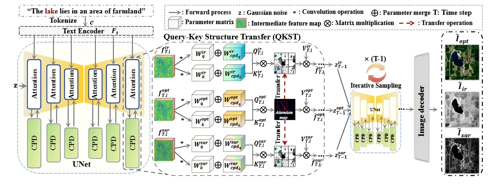
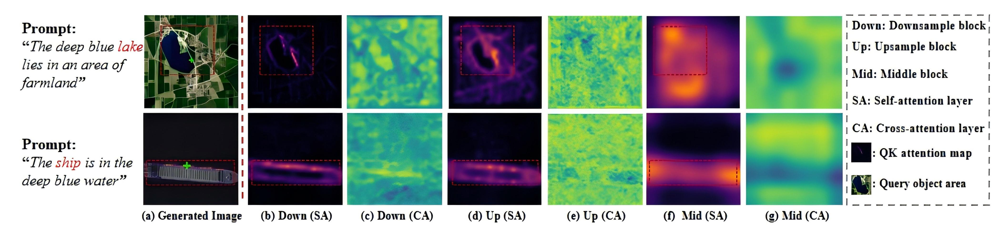
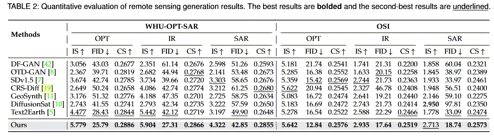
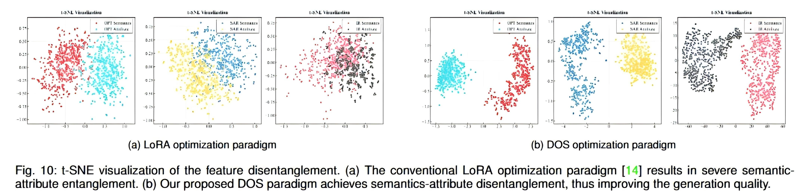

Generation Results

Prompt: A

Prompt: B

Prompt: C

Prompt: D
Slide to view more generation results across different modalities.
Prompt: A
Prompt: B
Prompt: C
Prompt: D
Slide to view more generation results across different modalities.
Remote sensing image generation is a pivotal technique for mitigating image scarcity in earth observation. However, existing generation methods are confined to single-modality synthesis, thereby failing to harness the complementary information inherent in multimodal images. In this paper, we propose a text-to-multimodal remote sensing image generation task, which aims to generate semantically and structurally consistent multimodal remote sensing images (e.g., optical, infrared, and synthetic aperture radar) from a single textual prompt. The core challenge of this task lies in mapping invariant semantics from a single text prompt while adapting to different modality attributes. We observe that LoRA adapters exhibit an inherent functional dichotomy, enabling disentanglement of semantic invariance and modality attributes at the parameter level. Thus, we propose a contrastive parameter disentanglement module that establishes the parameter-level disentanglement of shared semantics and distinct attributes within the orthogonal core subspace. Based on this, we next build a disentangled optimization strategy that first constrains the parameter matrix A of the LoRA adapter to extract invariant semantics by a multi-modal contrastive objective and then guides the multiple parameter matrices B to adapt different modality attributes under text prompts, thereby enabling the simultaneous generation of semantically consistent multimodal images. Furthermore, to guarantee structure consistency in generated multi-modal images, we then devise a query-key structure transfer mechanism that injects structural correlation priors from the anchor modality into other modalities during the inference process. Extensive experiments demonstrate that our proposed method outperforms state-of-the-art remote sensing image generation methods in terms of generation quality and semantic consistency, and also yields superior performance in the downstream remote sensing object classification task.

Figure 2: The overview of our proposed Contrastive Parameter Disentanglement (CPD) framework.

Figure 3: The inference framework of our proposed model.

Figure 4: Visualizations of QK attention activation maps across distinct UNet stages.

Table 1: Quantitative evaluation of remote sensing generation results. The best results are bolded and the second-best results are underlined.
